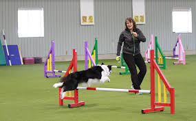

Training is about communication, not just obedience. At PurrPets, we believe that a well-trained dog is a happy, confident dog. Training strengthens the bond between you and your canine friend.

Every dog should know these three basic commands for their safety and your peace of mind:
| Command | How to Teach | Why It Matters |
|---|---|---|
| Sit | Hold a treat near their nose and move it up and back over their head. | The foundation for all other training and helps calm an excited dog. |
| Stay | Ask for a "Sit," then open your palm and take one step back. | Prevents dogs from running into dangerous situations or out the door. |
| Come (Recall) | Use a happy voice and reward them every single time they return to you. | The most important safety command if your dog ever gets off their leash. |
1. Keep it Short: Dogs have short attention spans. 5–10 minute sessions are best.
2. Positive Reinforcement: Reward good behavior with treats, praise, or toys immediately.
3. Be Patient: Every dog learns at a different pace. Never yell or use physical punishment.
Just like humans, dogs need to learn how to act around others. Socialization involves exposing your dog to new people, other animals, and different environments in a controlled, positive way.